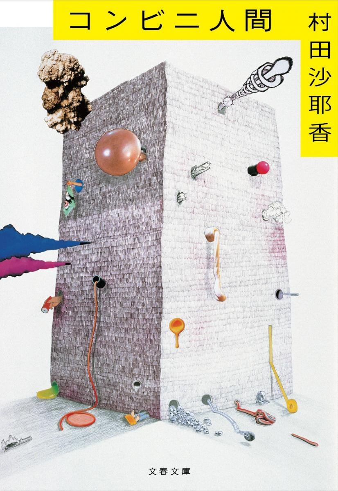
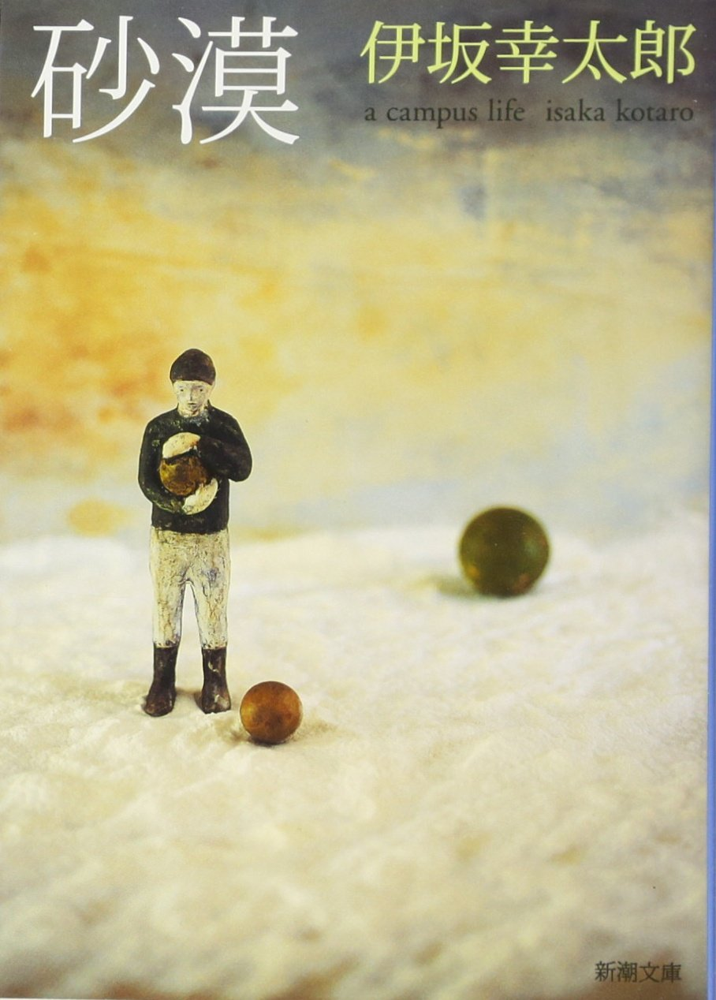
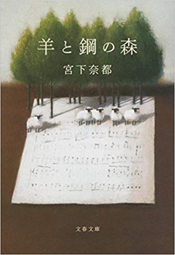
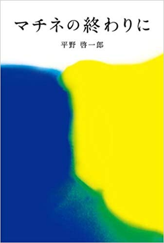
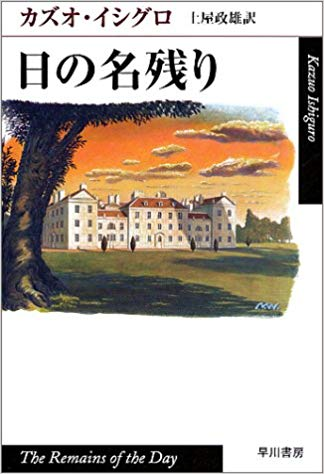

コンビニ人間
36歳未婚女性、古倉恵子。大学卒業後も就職せず、コンビニのバイトは18年目。これまで彼氏なし。オープン当初からスマイルマート日色駅前店で働き続け、変わりゆくメンバーを見送りながら、店長は8人目だ。日々食べるのはコンビニ食、夢の中でもコンビニのレジを打ち、清潔なコンビニの風景と「いらっしゃいませ!」の掛け声が、毎日の安らかな眠りをもたらしてくれる。
「『コンビニ人間』、面白そうな名前だなあ」と表題のタイトルにつられ、本屋でそっと手に取り購入したが、読み終えた後、何故か涙腺が弛んでいた。恐らく私もこの物語の主人公「古倉恵子」に自己投影したからだろう。
続きを読む

砂漠
入学した大学で出会った5人の男女。ボウリング、合コン、麻雀、通り魔犯との遭遇、捨てられた犬の救出、超能力対決……。共に経験した出来事や事件が、互いの絆を深め、それぞれを成長させてゆく。自らの未熟さに悩み、過剰さを持て余し、それでも何かを求めて手探りで先へ進もうとする青春時代。二度とない季節の光と闇をパンクロックのビートにのせて描く、爽快感溢れる長編小説。
冒頭の「内容紹介」にもあるように、「砂漠」は大学時代をテーマに話が展開していく青春小説だ。 チャラくてやんちゃな鳥井、超能力が使える南、めちゃくちゃ美人な東堂、いつでもまじめで熱い西嶋。そして、鳥井から・・・
続きを読む

調律に魅せられた主人公・外村を通して調律師の仕事を描いているが、表現や言葉にするのが難しい音の世界を、例え話や比喩をふんだんに使い感性を刺激してくれる。透明感あふれるその文体は、読者を羊と鋼の森の世界に引き込んでくれるといえよう。
羊と鋼の森
高校生の時、偶然ピアノ調律師の板鳥と出会って以来、調律に魅せられた外村は、念願の調律師として働き始める。ひたすら音と向き合い、人と向き合う外村。個性豊かな先輩たちや双子の姉妹に囲まれながら、調律の森へと深く分け入っていく―。一人の青年が成長する姿を温かく静謐な筆致で描いた感動作。
調律に魅せられた主人公・外村を通して調律師の仕事を描いているが、表現や言葉にするのが難しい音の世界を、例え話や比喩をふんだんに使い感性を刺激してくれる。透明感あふれるその文体は、読者を羊と鋼の森の世界に引き込んでくれるといえよう。

本作は単なる恋愛小説という枠にとどまらず、そのストーリーは、戦争・政治・音楽・経済と言った分野にまで話が及ぶ。二人の主人公を通して不安定な社会情勢を描く描写と感情の揺らぎは、著者の多彩な表現・語彙・知識をベースに読む者を圧倒し、考えさせ、人の営為について深く問いかけている。
マチネの終わりに
出会った瞬間から強く惹かれ合った天才ギタリストの蒔野(38)と通信社記者の洋子(40)。しかし、洋子には婚約者がいた。スランプに陥りもがく蒔野。人知れず体の不調に苦しむ洋子。やがて、蒔野と洋子の間にすれ違いが生じ、ついに二人の関係は途絶えてしまうが……。芥川賞作家が贈る、至高の恋愛小説。
本作は単なる恋愛小説という枠にとどまらず、そのストーリーは、戦争・政治・音楽・経済と言った分野にまで話が及ぶ。二人の主人公を通して不安定な社会情勢を描く描写と感情の揺らぎは、著者の多彩な表現・語彙・知識をベースに読む者を圧倒し、考えさせ、人の営為について深く問いかけている。

2017年にノーベル文学賞を受賞したカズオ・イシグロの作品。主人であるダーリントン卿へ忠誠を誓い、紳士でありながら品のある完璧な執事を目指すスティーブンの姿は彼の生き方そのものが反映されているといえよう。本作は映画化もされているが、こちらも素晴らしく、数ある彼の作品の中でも個人的に「日の名残り」が一番好き。
日の名残り
品格ある執事の道を追求し続けてきたスティーブンスは、短い旅に出た。美しい田園風景の道すがら様々な思い出がよぎる。ダーリントン卿への敬慕、執事の鑑だった亡父、女中頭への淡い想い、二つの大戦の間に邸内で催された重要な外交会議の数々―過ぎ去りし思い出は、輝きを増して胸のなかで生き続ける。英国最高の文学賞、ブッカー賞受賞作。
2017年にノーベル文学賞を受賞したカズオ・イシグロの作品。主人であるダーリントン卿へ忠誠を誓い、紳士でありながら品のある完璧な執事を目指すスティーブンの姿は彼の生き方そのものが反映されているといえよう。本作は映画化もされているが、こちらも素晴らしく、数ある彼の作品の中でも個人的に「日の名残り」が一番好き。